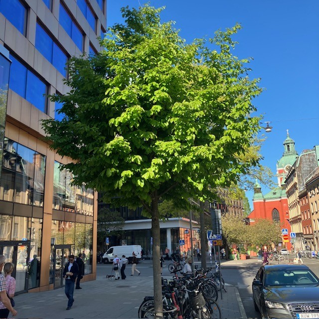

<!DOCTYPE html>
<html>
<head>
    
    <meta http-equiv="content-type" content="text/html; charset=UTF-8" />
    
        <script>
            L_NO_TOUCH = false;
            L_DISABLE_3D = false;
        </script>
    
    <style>html, body {width: 100%;height: 100%;margin: 0;padding: 0;}</style>
    <style>#map {position:absolute;top:0;bottom:0;right:0;left:0;}</style>
    <script src="https://cdn.jsdelivr.net/npm/leaflet@1.9.3/dist/leaflet.js"></script>
    <script src="https://code.jquery.com/jquery-3.7.1.min.js"></script>
    <script src="https://cdn.jsdelivr.net/npm/bootstrap@5.2.2/dist/js/bootstrap.bundle.min.js"></script>
    <script src="https://cdnjs.cloudflare.com/ajax/libs/Leaflet.awesome-markers/2.0.2/leaflet.awesome-markers.js"></script>
    <link rel="stylesheet" href="https://cdn.jsdelivr.net/npm/leaflet@1.9.3/dist/leaflet.css"/>
    <link rel="stylesheet" href="https://cdn.jsdelivr.net/npm/bootstrap@5.2.2/dist/css/bootstrap.min.css"/>
    <link rel="stylesheet" href="https://netdna.bootstrapcdn.com/bootstrap/3.0.0/css/bootstrap-glyphicons.css"/>
    <link rel="stylesheet" href="https://cdn.jsdelivr.net/npm/@fortawesome/fontawesome-free@6.2.0/css/all.min.css"/>
    <link rel="stylesheet" href="https://cdnjs.cloudflare.com/ajax/libs/Leaflet.awesome-markers/2.0.2/leaflet.awesome-markers.css"/>
    <link rel="stylesheet" href="https://cdn.jsdelivr.net/gh/python-visualization/folium/folium/templates/leaflet.awesome.rotate.min.css"/>
    
            <meta name="viewport" content="width=device-width,
                initial-scale=1.0, maximum-scale=1.0, user-scalable=no" />
            <style>
                #map_e5989b06df59921e583ea6c3b66b8b89 {
                    position: relative;
                    width: 100.0%;
                    height: 100.0%;
                    left: 0.0%;
                    top: 0.0%;
                }
                .leaflet-container { font-size: 1rem; }
            </style>
        
    <script src="https://cdnjs.cloudflare.com/ajax/libs/leaflet.markercluster/1.1.0/leaflet.markercluster.js"></script>
    <link rel="stylesheet" href="https://cdnjs.cloudflare.com/ajax/libs/leaflet.markercluster/1.1.0/MarkerCluster.css"/>
    <link rel="stylesheet" href="https://cdnjs.cloudflare.com/ajax/libs/leaflet.markercluster/1.1.0/MarkerCluster.Default.css"/>
</head>
<body>
    
    
<!-- Leaflet LocateControl CSS & JS -->
<link rel="stylesheet" href="https://unpkg.com/leaflet.locatecontrol/dist/L.Control.Locate.min.css" />
<script src="https://unpkg.com/leaflet.locatecontrol/dist/L.Control.Locate.min.js"></script>

<script>
document.addEventListener("DOMContentLoaded", function () {
    var map = window._leaflet_map;

    L.control.locate({
        position: 'topleft',
        strings: {
            title: "Visa min plats"
        },
        locateOptions: {
            enableHighAccuracy: true
        }
    }).addTo(map);
});
</script>
    
<script>
document.addEventListener("DOMContentLoaded", function() {
    // Hämta Leaflet-kartan (den finns som 'map_XXXXX' i Folium)
    window.map = Object.values(window).find(v => v instanceof L.Map);

    function onLocationFound(e) {
        var radius = e.accuracy / 2;

        var userIcon = L.divIcon({
            html: "🚶‍♂️",
            className: "",
            iconSize: [24, 24]
        });

        var userMarker = L.marker(e.latlng, {icon: userIcon}).addTo(window.map)
            .bindPopup("Du är här").openPopup();

        L.circle(e.latlng, radius).addTo(window.map);
    }

    function onLocationError(e) {
        alert("Kunde inte hämta plats: " + e.message);
    }

    if (window.map) {
        window.map.on('locationfound', onLocationFound);
        window.map.on('locationerror', onLocationError);

        // Starta platsförfrågan
        window.map.locate({setView: true, maxZoom: 16});
    } else {
        console.log("Kunde inte hitta Leaflet-kartan.");
    }
});
</script>
    
            <div class="folium-map" id="map_e5989b06df59921e583ea6c3b66b8b89" ></div>
        
</body>
<script>
    
    
            var map_e5989b06df59921e583ea6c3b66b8b89 = L.map(
                "map_e5989b06df59921e583ea6c3b66b8b89",
                {
                    center: [59.3293, 18.0686],
                    crs: L.CRS.EPSG3857,
                    ...{
  "zoom": 15,
  "zoomControl": true,
  "preferCanvas": false,
}

                }
            );

            

        
    
            var tile_layer_49dfc125b50f0d9d89ea3c2029f42315 = L.tileLayer(
                "https://{s}.basemaps.cartocdn.com/rastertiles/voyager/{z}/{x}/{y}{r}.png",
                {
  "minZoom": 0,
  "maxZoom": 20,
  "maxNativeZoom": 20,
  "noWrap": false,
  "attribution": "CartoDB",
  "subdomains": "abcd",
  "detectRetina": false,
  "tms": false,
  "opacity": 1,
}

            );
        
    
            tile_layer_49dfc125b50f0d9d89ea3c2029f42315.addTo(map_e5989b06df59921e583ea6c3b66b8b89);
        
    
            var marker_cluster_3cc437d77957968f162eb32a8fca6d76 = L.markerClusterGroup(
                {
}
            );
        
    
            marker_cluster_3cc437d77957968f162eb32a8fca6d76.addTo(map_e5989b06df59921e583ea6c3b66b8b89);
        
    
            var marker_b730397808394abfaa23f25564d35a1a = L.marker(
                [59.33210074001757, 18.07150116288134],
                {
}
            ).addTo(map_e5989b06df59921e583ea6c3b66b8b89);
        
    
            var div_icon_d7a492f60e9157ac55ca0121fb51cff3 = L.divIcon({
  "html": "\n        \u003cdiv style=\"background-color: #91D34C; color: white;\n                        border-radius: 50%; width: 28px; height: 28px;\n                        text-align: center; line-height: 28px;\n                        font-weight: bold;\"\u003e1\u003c/div\u003e\n        ",
  "className": "empty",
});
            marker_b730397808394abfaa23f25564d35a1a.setIcon(div_icon_d7a492f60e9157ac55ca0121fb51cff3);
        
    
        var popup_0f119e24591d7d0fe1bfde615ad78a86 = L.popup({
  "maxWidth": 320,
});

        
            
                var html_8422b5f9c0d8c86f541ad0038ef39734 = $(`<div id="html_8422b5f9c0d8c86f541ad0038ef39734" style="width: 100.0%; height: 100.0%;">     <div style="max-height: 500px; width: 280px; overflow-y: auto; padding: 10px;">                  <h2 style='margin-bottom: 10px;'>1. Kungsträdgården, vid dammen</h2>         <h4 style='color: darkgreen; margin-top: 0;'>Prydnadskörsbär, Prunus ’Accolade’</h4>         <div style='font-size: 15px; line-height: 1.6; text-align: justify;'>       <div style="font-family: Arial, sans-serif; font-size: 15px; line-height: 1.6; text-align: left;">      Det är inte varje dag man får promenera med huvudet i fluffiga rosa moln. Varje vår blir det en nyhet i hela landet när körsbärsträden i Kungsträdgården blommar. Stockholmare och turister vallfärdar för att fotografera denna blomsterfägring av vackert rosa, halvfyllda blommor i slutet av april.      <p>Körsbärsträden planterades 1998, i dubbla rader på båda sidorna av dammen. Träden är en hybrid mellan bergkörsbär (Prunus sargentii) och vårkörsbär (Prunus subhirtella). Den har en smalare krona i ungdomen men blir bredare med tiden, för att till slut få en nästan flat kronuppbyggnad, där grenarna hänger nedåt.</p>      <p>Andra platser i staden där du kan se prydnadskörsbär är på Luma torg i Hammarby Sjöstad.</p>      </div>      </div>         <div style="margin-top: 10px; display: flex; justify-content: center; gap: 8px; flex-wrap: wrap;">             <audio id="audio1" src="1.m4a"></audio>             <a href="javascript:document.getElementsByClassName('leaflet-marker-icon')[15].click();"               style="background-color: #91D34C; color: white; padding: 8px 12px;                       text-decoration: none; border-radius: 6px; display: inline-block;">               ← Föregående             </a>             <a href="javascript:document.getElementById('audio1').play();"               style="background-color: #FFA500; color: white; padding: 8px 12px;                       text-decoration: none; border-radius: 6px; display: inline-block;">               Lyssna             </a>             <a href="javascript:document.getElementsByClassName('leaflet-marker-icon')[1].click();"               style="background-color: #91D34C; color: white; padding: 8px 12px;                       text-decoration: none; border-radius: 6px; display: inline-block;">               Nästa →             </a>         </div>     </div>     </div>`)[0];
                popup_0f119e24591d7d0fe1bfde615ad78a86.setContent(html_8422b5f9c0d8c86f541ad0038ef39734);
            
        

        marker_b730397808394abfaa23f25564d35a1a.bindPopup(popup_0f119e24591d7d0fe1bfde615ad78a86)
        ;

        
    
    
                marker_b730397808394abfaa23f25564d35a1a.setIcon(div_icon_d7a492f60e9157ac55ca0121fb51cff3);
            
    
            var marker_3a095e2bbfb2d72c1488cef6e39630cc = L.marker(
                [59.33158633411901, 18.07190885862338],
                {
}
            ).addTo(map_e5989b06df59921e583ea6c3b66b8b89);
        
    
            var div_icon_98af01f8cce390ae7f6d2b93a96811b6 = L.divIcon({
  "html": "\n        \u003cdiv style=\"background-color: #91D34C; color: white;\n                        border-radius: 50%; width: 28px; height: 28px;\n                        text-align: center; line-height: 28px;\n                        font-weight: bold;\"\u003e2\u003c/div\u003e\n        ",
  "className": "empty",
});
            marker_3a095e2bbfb2d72c1488cef6e39630cc.setIcon(div_icon_98af01f8cce390ae7f6d2b93a96811b6);
        
    
        var popup_2480b2f1e99178f4309da64cd54a0e28 = L.popup({
  "maxWidth": 320,
});

        
            
                var html_add96f17e47d0f8edf57a0e0b32b927c = $(`<div id="html_add96f17e47d0f8edf57a0e0b32b927c" style="width: 100.0%; height: 100.0%;">     <div style="max-height: 500px; width: 280px; overflow-y: auto; padding: 10px;">                  <h2 style='margin-bottom: 10px;'>2. Kungsträdgården, vid alléerna</h2>         <h4 style='color: darkgreen; margin-top: 0;'>Skogslind, Tilia X cordata ’Rancho’, selektion av skogslind</h4>         <div style='font-size: 15px; line-height: 1.6; text-align: justify;'>       <div style="font-family: Arial, sans-serif; font-size: 15px; line-height: 1.6; text-align: left;">      Lind är det vanligaste trädet på innerstadens gator. Framför allt på grund av esplanadsystemets utbyggnad under slutet av 1800-talet, men även för att det är lättskött och klarar sig ganska bra i staden. I Kungsträdgården står lindarna i två, dubbelradiga alléer på var sida om parken – Jussi Björlings allé och Birgit Nilssons allé. Träden som står där idag planterades 1996 och 2003–2006.      <p>Benämningen cordata syftar till bladens hjärtform. Linden kan under sommaren avge så kallad honungsdagg – ett sekret som utsöndras av löss som suger växtsaft ur bladen.</p>      <p>Andra platser i staden där du kan se skogslind är på trottoaren vid Hammarby allé.</p>      </div>      </div>         <div style="margin-top: 10px; display: flex; justify-content: center; gap: 8px; flex-wrap: wrap;">             <audio id="audio2" src="2.m4a"></audio>             <a href="javascript:document.getElementsByClassName('leaflet-marker-icon')[0].click();"               style="background-color: #91D34C; color: white; padding: 8px 12px;                       text-decoration: none; border-radius: 6px; display: inline-block;">               ← Föregående             </a>             <a href="javascript:document.getElementById('audio2').play();"               style="background-color: #FFA500; color: white; padding: 8px 12px;                       text-decoration: none; border-radius: 6px; display: inline-block;">               Lyssna             </a>             <a href="javascript:document.getElementsByClassName('leaflet-marker-icon')[2].click();"               style="background-color: #91D34C; color: white; padding: 8px 12px;                       text-decoration: none; border-radius: 6px; display: inline-block;">               Nästa →             </a>         </div>     </div>     </div>`)[0];
                popup_2480b2f1e99178f4309da64cd54a0e28.setContent(html_add96f17e47d0f8edf57a0e0b32b927c);
            
        

        marker_3a095e2bbfb2d72c1488cef6e39630cc.bindPopup(popup_2480b2f1e99178f4309da64cd54a0e28)
        ;

        
    
    
                marker_3a095e2bbfb2d72c1488cef6e39630cc.setIcon(div_icon_98af01f8cce390ae7f6d2b93a96811b6);
            
    
            var marker_fb3725e7dfbab5801350f27bedf43d2b = L.marker(
                [59.330464464454856, 18.071962502799966],
                {
}
            ).addTo(map_e5989b06df59921e583ea6c3b66b8b89);
        
    
            var div_icon_7ba6b64b475563b68d7abffe37517c7f = L.divIcon({
  "html": "\n        \u003cdiv style=\"background-color: #91D34C; color: white;\n                        border-radius: 50%; width: 28px; height: 28px;\n                        text-align: center; line-height: 28px;\n                        font-weight: bold;\"\u003e3\u003c/div\u003e\n        ",
  "className": "empty",
});
            marker_fb3725e7dfbab5801350f27bedf43d2b.setIcon(div_icon_7ba6b64b475563b68d7abffe37517c7f);
        
    
        var popup_49718ab9d0a001047cb281ffacd5d4ac = L.popup({
  "maxWidth": 320,
});

        
            
                var html_96a7d3fb0b5e27d7244f07da5ff8cb7e = $(`<div id="html_96a7d3fb0b5e27d7244f07da5ff8cb7e" style="width: 100.0%; height: 100.0%;">     <div style="max-height: 500px; width: 280px; overflow-y: auto; padding: 10px;">                  <h2 style='margin-bottom: 10px;'>3. Kungsträdgården, vid Tehuset</h2>         <h4 style='color: darkgreen; margin-top: 0;'>Skogsalm, Ulmus gla bra</h4>         <div style='font-size: 15px; line-height: 1.6; text-align: justify;'>       <div style="font-family: Arial, sans-serif; font-size: 15px; line-height: 1.6; text-align: left;">      Almarna är planterade i slutet av 1800-talet som en så kallad boskée, en formellt planterad grupp av träd, ofta i rader eller geometriska mönster, som skapar ett avgränsat rum i en park. Idag står Tehuset i den cirkelformade planteringen. Almen var ett av de vanligaste stadsträden i både park- och gatumiljöer innan den allvarliga typen av almsjukan gjorde sitt intåg.      <p>Almen växer i en vasform, med en tidigt uppsplittrad krona och stora, mörkgröna, asymmetriska, sågade blad. Höstfärgen är gyllengul. De blommar på bar kvist under vårvintern med små blommor.</p>      <p>1971 planerade politikerna i Stockholm att bygga en tunnelbaneuppgång till Kungsträdgårdens tunnelbana precis där almarna står. Det blev stora protester som slutade med att almarna fick stå kvar.</p>      </div>      </div>         <div style="margin-top: 10px; display: flex; justify-content: center; gap: 8px; flex-wrap: wrap;">             <audio id="audio3" src="3.m4a"></audio>             <a href="javascript:document.getElementsByClassName('leaflet-marker-icon')[1].click();"               style="background-color: #91D34C; color: white; padding: 8px 12px;                       text-decoration: none; border-radius: 6px; display: inline-block;">               ← Föregående             </a>             <a href="javascript:document.getElementById('audio3').play();"               style="background-color: #FFA500; color: white; padding: 8px 12px;                       text-decoration: none; border-radius: 6px; display: inline-block;">               Lyssna             </a>             <a href="javascript:document.getElementsByClassName('leaflet-marker-icon')[3].click();"               style="background-color: #91D34C; color: white; padding: 8px 12px;                       text-decoration: none; border-radius: 6px; display: inline-block;">               Nästa →             </a>         </div>     </div>     </div>`)[0];
                popup_49718ab9d0a001047cb281ffacd5d4ac.setContent(html_96a7d3fb0b5e27d7244f07da5ff8cb7e);
            
        

        marker_fb3725e7dfbab5801350f27bedf43d2b.bindPopup(popup_49718ab9d0a001047cb281ffacd5d4ac)
        ;

        
    
    
                marker_fb3725e7dfbab5801350f27bedf43d2b.setIcon(div_icon_7ba6b64b475563b68d7abffe37517c7f);
            
    
            var marker_91f4d9313fab7f296dfd5955c1e139fe = L.marker(
                [59.33044257393739, 18.069258836239964],
                {
}
            ).addTo(map_e5989b06df59921e583ea6c3b66b8b89);
        
    
            var div_icon_8cf41392e593b21588c48dee2485e03d = L.divIcon({
  "html": "\n        \u003cdiv style=\"background-color: #91D34C; color: white;\n                        border-radius: 50%; width: 28px; height: 28px;\n                        text-align: center; line-height: 28px;\n                        font-weight: bold;\"\u003e4\u003c/div\u003e\n        ",
  "className": "empty",
});
            marker_91f4d9313fab7f296dfd5955c1e139fe.setIcon(div_icon_8cf41392e593b21588c48dee2485e03d);
        
    
        var popup_73fbe64adf440ce8044aa5169520aa2c = L.popup({
  "maxWidth": 320,
});

        
            
                var html_ac472c300194cbc9c56b872c7c4cd119 = $(`<div id="html_ac472c300194cbc9c56b872c7c4cd119" style="width: 100.0%; height: 100.0%;">     <div style="max-height: 500px; width: 280px; overflow-y: auto; padding: 10px;">                  <h2 style='margin-bottom: 10px;'>4. Jakobsgatan vid Hamburger Börs</h2>         <h4 style='color: darkgreen; margin-top: 0;'>Hybridkörsbär, Prunus X gondouinii ’Schnee’</h4>         <div style='font-size: 15px; line-height: 1.6; text-align: justify;'>       <div style="font-family: Arial, sans-serif; font-size: 15px; line-height: 1.6; text-align: left;">      Det här är ett mindre träd med en först konisk, senare brett rundad och slutligen något tillplattad krona. Det har en mycket rik blomning och blommar på bar kvist i början av maj. Blommorna är rent vita och enkla till något fyllda. Höstfärgerna är sprakande, i gult till orangerött. Träden planterades under 1990-talet.      </div>      </div>         <div style="margin-top: 10px; display: flex; justify-content: center; gap: 8px; flex-wrap: wrap;">             <audio id="audio4" src="4.m4a"></audio>             <a href="javascript:document.getElementsByClassName('leaflet-marker-icon')[2].click();"               style="background-color: #91D34C; color: white; padding: 8px 12px;                       text-decoration: none; border-radius: 6px; display: inline-block;">               ← Föregående             </a>             <a href="javascript:document.getElementById('audio4').play();"               style="background-color: #FFA500; color: white; padding: 8px 12px;                       text-decoration: none; border-radius: 6px; display: inline-block;">               Lyssna             </a>             <a href="javascript:document.getElementsByClassName('leaflet-marker-icon')[4].click();"               style="background-color: #91D34C; color: white; padding: 8px 12px;                       text-decoration: none; border-radius: 6px; display: inline-block;">               Nästa →             </a>         </div>     </div>     </div>`)[0];
                popup_73fbe64adf440ce8044aa5169520aa2c.setContent(html_ac472c300194cbc9c56b872c7c4cd119);
            
        

        marker_91f4d9313fab7f296dfd5955c1e139fe.bindPopup(popup_73fbe64adf440ce8044aa5169520aa2c)
        ;

        
    
    
                marker_91f4d9313fab7f296dfd5955c1e139fe.setIcon(div_icon_8cf41392e593b21588c48dee2485e03d);
            
    
            var marker_dca8120997ec76d45d42761ac3cd3105 = L.marker(
                [59.33065600579097, 18.068572190779687],
                {
}
            ).addTo(map_e5989b06df59921e583ea6c3b66b8b89);
        
    
            var div_icon_2cf9c360c57f6db5b9ab8525294ddb7a = L.divIcon({
  "html": "\n        \u003cdiv style=\"background-color: #91D34C; color: white;\n                        border-radius: 50%; width: 28px; height: 28px;\n                        text-align: center; line-height: 28px;\n                        font-weight: bold;\"\u003e5\u003c/div\u003e\n        ",
  "className": "empty",
});
            marker_dca8120997ec76d45d42761ac3cd3105.setIcon(div_icon_2cf9c360c57f6db5b9ab8525294ddb7a);
        
    
        var popup_c9ebd019dccf06727ecabcce9dab9fcb = L.popup({
  "maxWidth": 320,
});

        
            
                var html_8197cb0e3c269baeb702e1307ef9d966 = $(`<div id="html_8197cb0e3c269baeb702e1307ef9d966" style="width: 100.0%; height: 100.0%;">     <div style="max-height: 500px; width: 280px; overflow-y: auto; padding: 10px;">                  <h2 style='margin-bottom: 10px;'>5. Regeringsgatan, mittemot Gallerian</h2>         <h4 style='color: darkgreen; margin-top: 0;'>Mannaask, Fraxinus ornus</h4>         <div style='font-size: 15px; line-height: 1.6; text-align: justify;'>       <div style="font-family: Arial, sans-serif; font-size: 15px; line-height: 1.6; text-align: left;">      I de upphöjda betongkaren på Regeringsgatan planterades mannaaskar i mitten av 1970-talet. Detta lilla och långsamt växande träd har en god förmåga att klara av knappa förhållanden och är friskt grön i färgen. Kronan är samlad och har en rund till oval form. Höstfärgen är gul. I juni blommar träden generöst med vita plymer. Den kåda som utvinns ur träden i odlingar i Sydeuropa används som ett laxermedel, och skiljer sig från den manna som omnämns i andra sammanhang.      <p>Andra platser i staden där du kan se mannaask är på Brunkebergstorg vid Riksbanken och på Mäster Samuelsgatan.</p>      </div>      </div>         <div style="margin-top: 10px; display: flex; justify-content: center; gap: 8px; flex-wrap: wrap;">             <audio id="audio5" src="5.m4a"></audio>             <a href="javascript:document.getElementsByClassName('leaflet-marker-icon')[3].click();"               style="background-color: #91D34C; color: white; padding: 8px 12px;                       text-decoration: none; border-radius: 6px; display: inline-block;">               ← Föregående             </a>             <a href="javascript:document.getElementById('audio5').play();"               style="background-color: #FFA500; color: white; padding: 8px 12px;                       text-decoration: none; border-radius: 6px; display: inline-block;">               Lyssna             </a>             <a href="javascript:document.getElementsByClassName('leaflet-marker-icon')[5].click();"               style="background-color: #91D34C; color: white; padding: 8px 12px;                       text-decoration: none; border-radius: 6px; display: inline-block;">               Nästa →             </a>         </div>     </div>     </div>`)[0];
                popup_c9ebd019dccf06727ecabcce9dab9fcb.setContent(html_8197cb0e3c269baeb702e1307ef9d966);
            
        

        marker_dca8120997ec76d45d42761ac3cd3105.bindPopup(popup_c9ebd019dccf06727ecabcce9dab9fcb)
        ;

        
    
    
                marker_dca8120997ec76d45d42761ac3cd3105.setIcon(div_icon_2cf9c360c57f6db5b9ab8525294ddb7a);
            
    
            var marker_8004afb396eff9657974c1cd57bf9a81 = L.marker(
                [59.330171677731, 18.067939189495995],
                {
}
            ).addTo(map_e5989b06df59921e583ea6c3b66b8b89);
        
    
            var div_icon_1f29191d10168cc2a8cebbd33830af08 = L.divIcon({
  "html": "\n        \u003cdiv style=\"background-color: #91D34C; color: white;\n                        border-radius: 50%; width: 28px; height: 28px;\n                        text-align: center; line-height: 28px;\n                        font-weight: bold;\"\u003e6\u003c/div\u003e\n        ",
  "className": "empty",
});
            marker_8004afb396eff9657974c1cd57bf9a81.setIcon(div_icon_1f29191d10168cc2a8cebbd33830af08);
        
    
        var popup_f6b77862bc42d482449e92a942e2eeb6 = L.popup({
  "maxWidth": 320,
});

        
            
                var html_25f7c5f7934326aee343c11f72ad6481 = $(`<div id="html_25f7c5f7934326aee343c11f72ad6481" style="width: 100.0%; height: 100.0%;">     <div style="max-height: 500px; width: 280px; overflow-y: auto; padding: 10px;">                  <h2 style='margin-bottom: 10px;'>6. Jakobsgatan, utanför Gallerian</h2>         <h4 style='color: darkgreen; margin-top: 0;'>Kärrek, Quercus palustris</h4>         <div style='font-size: 15px; line-height: 1.6; text-align: justify;'>       <div style="font-family: Arial, sans-serif; font-size: 15px; line-height: 1.6; text-align: left;">      Unga kärrekar har en spikrak, genomgående stam och en konisk kronform. Med tiden breder kronan ut sig och de nedersta grenarna får ett hängande växtsätt. Bladen är djupflikiga och klargrönt glänsande, och får vackra höstfärger. Träden producerar rikligt med ekollon.      <p>Kärrekarna på Jakobsgatan planterades under slutet av 1990-talet.</p>      <p>Andra platser i staden där du kan hitta kärrek är på Eastmanvägen och Olivecronas väg i Sabbatsbergsområdet, där kärrekarna växer så det knakar. Du kan också se kärrekar i Järnvägsparken, bredvid Tegelbacken. De träden har flyttats från Malmtorgsgatan och står i en grupp om fem träd och en solitärt. I Kista dominerar kärreken bland gatuträden.</p>      </div>      </div>         <div style="margin-top: 10px; display: flex; justify-content: center; gap: 8px; flex-wrap: wrap;">             <audio id="audio6" src="6.m4a"></audio>             <a href="javascript:document.getElementsByClassName('leaflet-marker-icon')[4].click();"               style="background-color: #91D34C; color: white; padding: 8px 12px;                       text-decoration: none; border-radius: 6px; display: inline-block;">               ← Föregående             </a>             <a href="javascript:document.getElementById('audio6').play();"               style="background-color: #FFA500; color: white; padding: 8px 12px;                       text-decoration: none; border-radius: 6px; display: inline-block;">               Lyssna             </a>             <a href="javascript:document.getElementsByClassName('leaflet-marker-icon')[6].click();"               style="background-color: #91D34C; color: white; padding: 8px 12px;                       text-decoration: none; border-radius: 6px; display: inline-block;">               Nästa →             </a>         </div>     </div>     </div>`)[0];
                popup_f6b77862bc42d482449e92a942e2eeb6.setContent(html_25f7c5f7934326aee343c11f72ad6481);
            
        

        marker_8004afb396eff9657974c1cd57bf9a81.bindPopup(popup_f6b77862bc42d482449e92a942e2eeb6)
        ;

        
    
    
                marker_8004afb396eff9657974c1cd57bf9a81.setIcon(div_icon_1f29191d10168cc2a8cebbd33830af08);
            
    
            var marker_37ba47f68c3ed8988f336183f540cdca = L.marker(
                [59.33005948775691, 18.067386654418506],
                {
}
            ).addTo(map_e5989b06df59921e583ea6c3b66b8b89);
        
    
            var div_icon_51f4bd3f7fb89576f0fb6c6f479bea7c = L.divIcon({
  "html": "\n        \u003cdiv style=\"background-color: #91D34C; color: white;\n                        border-radius: 50%; width: 28px; height: 28px;\n                        text-align: center; line-height: 28px;\n                        font-weight: bold;\"\u003e7\u003c/div\u003e\n        ",
  "className": "empty",
});
            marker_37ba47f68c3ed8988f336183f540cdca.setIcon(div_icon_51f4bd3f7fb89576f0fb6c6f479bea7c);
        
    
        var popup_4f908603e44c1c1c699a4b7f58cfb224 = L.popup({
  "maxWidth": 320,
});

        
            
                var html_17c0efeab56fc8c79c2f76a5d9f3b835 = $(`<div id="html_17c0efeab56fc8c79c2f76a5d9f3b835" style="width: 100.0%; height: 100.0%;">     <div style="max-height: 500px; width: 280px; overflow-y: auto; padding: 10px;">                  <h2 style='margin-bottom: 10px;'>7. Jakobsgatan, korsningen Malmtorgsgatan</h2>         <h4 style='color: darkgreen; margin-top: 0;'>Papegojbuske, Parrotia persica</h4>         <div style='font-size: 15px; line-height: 1.6; text-align: justify;'>       <div style="font-family: Arial, sans-serif; font-size: 15px; line-height: 1.6; text-align: left;">      Papegojbusken är trots sitt namn egentligen ett mindre träd, som kan bli upp till tio meter högt. Dessa träd får en fantastisk höstfärg i orange, rött och lila. Finast färger får trädet på en varm växtplats och efter en varm sommar.      <p>Träden planterades 2019.</p>      <p>Andra platser i staden där du kan se papegojbuske är på Medevigatan och Luntmakargatan.</p>      </div>      </div>         <div style="margin-top: 10px; display: flex; justify-content: center; gap: 8px; flex-wrap: wrap;">             <audio id="audio7" src="7.m4a"></audio>             <a href="javascript:document.getElementsByClassName('leaflet-marker-icon')[5].click();"               style="background-color: #91D34C; color: white; padding: 8px 12px;                       text-decoration: none; border-radius: 6px; display: inline-block;">               ← Föregående             </a>             <a href="javascript:document.getElementById('audio7').play();"               style="background-color: #FFA500; color: white; padding: 8px 12px;                       text-decoration: none; border-radius: 6px; display: inline-block;">               Lyssna             </a>             <a href="javascript:document.getElementsByClassName('leaflet-marker-icon')[7].click();"               style="background-color: #91D34C; color: white; padding: 8px 12px;                       text-decoration: none; border-radius: 6px; display: inline-block;">               Nästa →             </a>         </div>     </div>     </div>`)[0];
                popup_4f908603e44c1c1c699a4b7f58cfb224.setContent(html_17c0efeab56fc8c79c2f76a5d9f3b835);
            
        

        marker_37ba47f68c3ed8988f336183f540cdca.bindPopup(popup_4f908603e44c1c1c699a4b7f58cfb224)
        ;

        
    
    
                marker_37ba47f68c3ed8988f336183f540cdca.setIcon(div_icon_51f4bd3f7fb89576f0fb6c6f479bea7c);
            
    
            var marker_8066db0afc7dd21c011fd73c51c32fdc = L.marker(
                [59.33027839467252, 18.067145255623878],
                {
}
            ).addTo(map_e5989b06df59921e583ea6c3b66b8b89);
        
    
            var div_icon_59de2ed50c9c3743e43ba8a99e7776ec = L.divIcon({
  "html": "\n        \u003cdiv style=\"background-color: #91D34C; color: white;\n                        border-radius: 50%; width: 28px; height: 28px;\n                        text-align: center; line-height: 28px;\n                        font-weight: bold;\"\u003e8\u003c/div\u003e\n        ",
  "className": "empty",
});
            marker_8066db0afc7dd21c011fd73c51c32fdc.setIcon(div_icon_59de2ed50c9c3743e43ba8a99e7776ec);
        
    
        var popup_061d6aa9e1893cb0954456795247f64c = L.popup({
  "maxWidth": 320,
});

        
            
                var html_18927f43cd7dfaebe7fff3d498d6243d = $(`<div id="html_18927f43cd7dfaebe7fff3d498d6243d" style="width: 100.0%; height: 100.0%;">     <div style="max-height: 500px; width: 280px; overflow-y: auto; padding: 10px;">                  <h2 style='margin-bottom: 10px;'>8. Malmtorgsgatans östra sida</h2>         <h4 style='color: darkgreen; margin-top: 0;'>Magnolia ’Galaxy’</h4>         <div style='font-size: 15px; line-height: 1.6; text-align: justify;'>Denna magnolia blommar med stora rosaröda blommor.</div>         <div style="margin-top: 10px; display: flex; justify-content: center; gap: 8px; flex-wrap: wrap;">             <audio id="audio8" src="8.m4a"></audio>             <a href="javascript:document.getElementsByClassName('leaflet-marker-icon')[6].click();"               style="background-color: #91D34C; color: white; padding: 8px 12px;                       text-decoration: none; border-radius: 6px; display: inline-block;">               ← Föregående             </a>             <a href="javascript:document.getElementById('audio8').play();"               style="background-color: #FFA500; color: white; padding: 8px 12px;                       text-decoration: none; border-radius: 6px; display: inline-block;">               Lyssna             </a>             <a href="javascript:document.getElementsByClassName('leaflet-marker-icon')[8].click();"               style="background-color: #91D34C; color: white; padding: 8px 12px;                       text-decoration: none; border-radius: 6px; display: inline-block;">               Nästa →             </a>         </div>     </div>     </div>`)[0];
                popup_061d6aa9e1893cb0954456795247f64c.setContent(html_18927f43cd7dfaebe7fff3d498d6243d);
            
        

        marker_8066db0afc7dd21c011fd73c51c32fdc.bindPopup(popup_061d6aa9e1893cb0954456795247f64c)
        ;

        
    
    
                marker_8066db0afc7dd21c011fd73c51c32fdc.setIcon(div_icon_59de2ed50c9c3743e43ba8a99e7776ec);
            
    
            var marker_51a0089b1141efc54c5b94fb9c932b3e = L.marker(
                [59.331404574038345, 18.06636320377362],
                {
}
            ).addTo(map_e5989b06df59921e583ea6c3b66b8b89);
        
    
            var div_icon_fe064db5a4fb893c228a5c323686b4c5 = L.divIcon({
  "html": "\n        \u003cdiv style=\"background-color: #91D34C; color: white;\n                        border-radius: 50%; width: 28px; height: 28px;\n                        text-align: center; line-height: 28px;\n                        font-weight: bold;\"\u003e9\u003c/div\u003e\n        ",
  "className": "empty",
});
            marker_51a0089b1141efc54c5b94fb9c932b3e.setIcon(div_icon_fe064db5a4fb893c228a5c323686b4c5);
        
    
        var popup_0a5fe8111873991438d89932476d897e = L.popup({
  "maxWidth": 320,
});

        
            
                var html_ed667d1980f1b29d07b3dc615138d7bd = $(`<div id="html_ed667d1980f1b29d07b3dc615138d7bd" style="width: 100.0%; height: 100.0%;">     <div style="max-height: 500px; width: 280px; overflow-y: auto; padding: 10px;">                  <h2 style='margin-bottom: 10px;'>9. Brunkebergstorg</h2>         <h4 style='color: darkgreen; margin-top: 0;'>Magnolia</h4>         <div style='font-size: 15px; line-height: 1.6; text-align: justify;'>       <div style="font-family: Arial, sans-serif; font-size: 15px; line-height: 1.6; text-align: left;">      År 2017 rustade staden upp Brunkebergstorg i samarbete med fastighetsägare för att skapa en bättre mötesplats mitt i city. Platsen är belagd med granithällar och i de upphöjda terrazzocirklarna planterades en blandning av magnolior med olika karaktär.      <p>Wada’s Memory är en hybrid mellan japansk magnolia (Magnolia kobus) och pilbladig magnolia (Magnolia salicifolia). Den blommar med stora, helvita blommor och har blomblad som hänger nedåt.</p>      <p>Rosenmagnolia ’Heaven scent’ är en kulturhybrid mellan yunanmagnolia (Magnolia denudata) och liljemagnolian (Magnolia liliflora). Den blommar med doftande, rosaröda blommor.</p>      <p>Biondi är en av de tidigast blommande magnoliorna. Den får vita blommor med rosa inslag.</p>      </div>      </div>         <div style="margin-top: 10px; display: flex; justify-content: center; gap: 8px; flex-wrap: wrap;">             <audio id="audio9" src="9.m4a"></audio>             <a href="javascript:document.getElementsByClassName('leaflet-marker-icon')[7].click();"               style="background-color: #91D34C; color: white; padding: 8px 12px;                       text-decoration: none; border-radius: 6px; display: inline-block;">               ← Föregående             </a>             <a href="javascript:document.getElementById('audio9').play();"               style="background-color: #FFA500; color: white; padding: 8px 12px;                       text-decoration: none; border-radius: 6px; display: inline-block;">               Lyssna             </a>             <a href="javascript:document.getElementsByClassName('leaflet-marker-icon')[9].click();"               style="background-color: #91D34C; color: white; padding: 8px 12px;                       text-decoration: none; border-radius: 6px; display: inline-block;">               Nästa →             </a>         </div>     </div>     </div>`)[0];
                popup_0a5fe8111873991438d89932476d897e.setContent(html_ed667d1980f1b29d07b3dc615138d7bd);
            
        

        marker_51a0089b1141efc54c5b94fb9c932b3e.bindPopup(popup_0a5fe8111873991438d89932476d897e)
        ;

        
    
    
                marker_51a0089b1141efc54c5b94fb9c932b3e.setIcon(div_icon_fe064db5a4fb893c228a5c323686b4c5);
            
    
            var marker_58fdd1343d50f8a47239f99fbd1c823b = L.marker(
                [59.33169296794744, 18.06512278247012],
                {
}
            ).addTo(map_e5989b06df59921e583ea6c3b66b8b89);
        
    
            var div_icon_31dba0dc5d333c43b52c9b49511a1df4 = L.divIcon({
  "html": "\n        \u003cdiv style=\"background-color: #91D34C; color: white;\n                        border-radius: 50%; width: 28px; height: 28px;\n                        text-align: center; line-height: 28px;\n                        font-weight: bold;\"\u003e10\u003c/div\u003e\n        ",
  "className": "empty",
});
            marker_58fdd1343d50f8a47239f99fbd1c823b.setIcon(div_icon_31dba0dc5d333c43b52c9b49511a1df4);
        
    
        var popup_7fee4f8d5bd586bf57cd5837a56d152e = L.popup({
  "maxWidth": 320,
});

        
            
                var html_fc0809afad380500ab67b8612c92f226 = $(`<div id="html_fc0809afad380500ab67b8612c92f226" style="width: 100.0%; height: 100.0%;">     <div style="max-height: 500px; width: 280px; overflow-y: auto; padding: 10px;">                  <h2 style='margin-bottom: 10px;'>10. Benny Fredrikssons torg</h2>         <h4 style='color: darkgreen; margin-top: 0;'>Turkisk trädhassel, Corylus colurna</h4>         <div style='font-size: 15px; line-height: 1.6; text-align: justify;'>       <div style="font-family: Arial, sans-serif; font-size: 15px; line-height: 1.6; text-align: left;">      I den upphöjda rundeln mellan Kulturhuset och Riksbanken planterades på 1990-talet en turkisk trädhassel. Trädet har äggrunda, svagt flikade, ljusgröna blad och en tydligt genomgående stam med flagig bark. Under vintern pryds det av dekorativa hanhängen och små röda honblommor. Nötterna är ganska stora och sitter samlade i stora, fransiga buketter.      <p>Du kan också hitta turkisk trädhassel på Sankt Göransgatan. Förskolor i det området har rapporterat att uppspelta ekorrar plockar hasselnötter av träden.</p>      </div>      </div>         <div style="margin-top: 10px; display: flex; justify-content: center; gap: 8px; flex-wrap: wrap;">             <audio id="audio10" src="10.m4a"></audio>             <a href="javascript:document.getElementsByClassName('leaflet-marker-icon')[8].click();"               style="background-color: #91D34C; color: white; padding: 8px 12px;                       text-decoration: none; border-radius: 6px; display: inline-block;">               ← Föregående             </a>             <a href="javascript:document.getElementById('audio10').play();"               style="background-color: #FFA500; color: white; padding: 8px 12px;                       text-decoration: none; border-radius: 6px; display: inline-block;">               Lyssna             </a>             <a href="javascript:document.getElementsByClassName('leaflet-marker-icon')[10].click();"               style="background-color: #91D34C; color: white; padding: 8px 12px;                       text-decoration: none; border-radius: 6px; display: inline-block;">               Nästa →             </a>         </div>     </div>     </div>`)[0];
                popup_7fee4f8d5bd586bf57cd5837a56d152e.setContent(html_fc0809afad380500ab67b8612c92f226);
            
        

        marker_58fdd1343d50f8a47239f99fbd1c823b.bindPopup(popup_7fee4f8d5bd586bf57cd5837a56d152e)
        ;

        
    
    
                marker_58fdd1343d50f8a47239f99fbd1c823b.setIcon(div_icon_31dba0dc5d333c43b52c9b49511a1df4);
            
    
            var marker_715403c4f810289647631b3133e49f42 = L.marker(
                [59.331985008098364, 18.061241672472264],
                {
}
            ).addTo(map_e5989b06df59921e583ea6c3b66b8b89);
        
    
            var div_icon_60f74209d125fb129fc4d1a257a33632 = L.divIcon({
  "html": "\n        \u003cdiv style=\"background-color: #91D34C; color: white;\n                        border-radius: 50%; width: 28px; height: 28px;\n                        text-align: center; line-height: 28px;\n                        font-weight: bold;\"\u003e11\u003c/div\u003e\n        ",
  "className": "empty",
});
            marker_715403c4f810289647631b3133e49f42.setIcon(div_icon_60f74209d125fb129fc4d1a257a33632);
        
    
        var popup_7fc9aee1a9a101b8d40288292f95833c = L.popup({
  "maxWidth": 320,
});

        
            
                var html_cc9fe4f012395abe86ed8b79e5bd5925 = $(`<div id="html_cc9fe4f012395abe86ed8b79e5bd5925" style="width: 100.0%; height: 100.0%;">     <div style="max-height: 500px; width: 280px; overflow-y: auto; padding: 10px;">                  <h2 style='margin-bottom: 10px;'>11. Klarabergsviadukten, utanför Åhléns</h2>         <h4 style='color: darkgreen; margin-top: 0;'>Kinesträd, Koelreuteria paniculata</h4>         <div style='font-size: 15px; line-height: 1.6; text-align: justify;'>       <div style="font-family: Arial, sans-serif; font-size: 15px; line-height: 1.6; text-align: left;">      Kinesträden på Klarabergsviadukten är några av de träd som staden får flest frågor kring. Det är många förbipasserande som nyfiket undrar vad det är för slags träd.      <p>Tidigare stod det lindar på platsen men som inte trivdes alls. De mycket ledsna träden såg ut som att de hade gått en rond med en torktumlare. Det är inte särskilt förvånande då platsen inte gav lindarna några vidare förutsättningar. Det är en varm plats i staden och träden hade ytterst begränsat med rotutrymme i underjordiska lådor, ovanpå tunnelbanans tak.</p>      <p>Kinesträden hamnade här i omgångar efter att tätskiktet till tunnelbanan renoverades i mitten av 2010-talet. Det är ett mindre träd, som kan bli fem till åtta meter högt. En utmaning har varit att hitta fina exemplar som stamträd i plantskolan. Dels för att träden är fröförökade och dels för att de verkar föredra att växa som en buske.</p>      <p>Bladen är vanligen parbladiga och cirka 30 centimeter långa med bronsfärgat lövutspring, och blir sedan mörkgröna. Höstfärgen är brungul till orange. De blommar sent, under juli–augusti, med gula plymer. Träden får frukter under september som dekorativt sitter kvar i träden som kinesiska lyktor. Trädet är ljuskrävande och gillar varma platser.</p>      <p>Andra platser i staden där du kan hitta kinesträd är på Magnus Ladulåsgatan och snart även vid Slussen. Vill man resa lite längre bort finns de på Friisgatan i Malmö och i Dresden i Tyskland.</p>      </div>      </div>         <div style="margin-top: 10px; display: flex; justify-content: center; gap: 8px; flex-wrap: wrap;">             <audio id="audio11" src="11.m4a"></audio>             <a href="javascript:document.getElementsByClassName('leaflet-marker-icon')[9].click();"               style="background-color: #91D34C; color: white; padding: 8px 12px;                       text-decoration: none; border-radius: 6px; display: inline-block;">               ← Föregående             </a>             <a href="javascript:document.getElementById('audio11').play();"               style="background-color: #FFA500; color: white; padding: 8px 12px;                       text-decoration: none; border-radius: 6px; display: inline-block;">               Lyssna             </a>             <a href="javascript:document.getElementsByClassName('leaflet-marker-icon')[11].click();"               style="background-color: #91D34C; color: white; padding: 8px 12px;                       text-decoration: none; border-radius: 6px; display: inline-block;">               Nästa →             </a>         </div>     </div>     </div>`)[0];
                popup_7fc9aee1a9a101b8d40288292f95833c.setContent(html_cc9fe4f012395abe86ed8b79e5bd5925);
            
        

        marker_715403c4f810289647631b3133e49f42.bindPopup(popup_7fc9aee1a9a101b8d40288292f95833c)
        ;

        
    
    
                marker_715403c4f810289647631b3133e49f42.setIcon(div_icon_60f74209d125fb129fc4d1a257a33632);
            
    
            var marker_f2911585c9689a714ba9841674eb7d4d = L.marker(
                [59.331454241393075, 18.0599490761384],
                {
}
            ).addTo(map_e5989b06df59921e583ea6c3b66b8b89);
        
    
            var div_icon_3ee88e43a00972224bd726853069027e = L.divIcon({
  "html": "\n        \u003cdiv style=\"background-color: #91D34C; color: white;\n                        border-radius: 50%; width: 28px; height: 28px;\n                        text-align: center; line-height: 28px;\n                        font-weight: bold;\"\u003e12\u003c/div\u003e\n        ",
  "className": "empty",
});
            marker_f2911585c9689a714ba9841674eb7d4d.setIcon(div_icon_3ee88e43a00972224bd726853069027e);
        
    
        var popup_df507611024f569b1a1b9ad317a66e9b = L.popup({
  "maxWidth": 320,
});

        
            
                var html_cd7513a6449c65edf3f74079b535e6ef = $(`<div id="html_cd7513a6449c65edf3f74079b535e6ef" style="width: 100.0%; height: 100.0%;">     <div style="max-height: 500px; width: 280px; overflow-y: auto; padding: 10px;">                  <h2 style='margin-bottom: 10px;'>12. Klara västra kyrkogata</h2>         <h4 style='color: darkgreen; margin-top: 0;'>Korstörne, Gleditsia triacanthos f. inermis</h4>         <div style='font-size: 15px; line-height: 1.6; text-align: justify;'>       <div style="font-family: Arial, sans-serif; font-size: 15px; line-height: 1.6; text-align: left;">      Utformningen på platsen flörtar lite med miniparken Paley park i New York där en dunge ljusgrön korstörne står insprängd mellan skyskraporna.      <p>Korstörnet är en värmegynnad och ljusälskande pionjärart och ett av de vanligaste gatuträden i östra USA. De beskrivs ibland som ”torgträd”, det vill säga träd som får blad lite senare på året. Träden skymmer därför inte vårsolen, samtidigt som ett skirt lövverk senare ger en behaglig skugga under högsommaren.</p>      <p>Under hösten får träden fina, gula höstfärger och dekorativa ärtskidor som kan sitta kvar när träden är avlövade. ”Inermis” är latin för obeväpnad, vilket innebär att de här träden inte har de spetsiga och vassa utskott, så kallade tornar, som skyddar mot betande djur och som torde vara varje arborists mardröm.</p>      </div>      </div>         <div style="margin-top: 10px; display: flex; justify-content: center; gap: 8px; flex-wrap: wrap;">             <audio id="audio12" src="12.m4a"></audio>             <a href="javascript:document.getElementsByClassName('leaflet-marker-icon')[10].click();"               style="background-color: #91D34C; color: white; padding: 8px 12px;                       text-decoration: none; border-radius: 6px; display: inline-block;">               ← Föregående             </a>             <a href="javascript:document.getElementById('audio12').play();"               style="background-color: #FFA500; color: white; padding: 8px 12px;                       text-decoration: none; border-radius: 6px; display: inline-block;">               Lyssna             </a>             <a href="javascript:document.getElementsByClassName('leaflet-marker-icon')[12].click();"               style="background-color: #91D34C; color: white; padding: 8px 12px;                       text-decoration: none; border-radius: 6px; display: inline-block;">               Nästa →             </a>         </div>     </div>     </div>`)[0];
                popup_df507611024f569b1a1b9ad317a66e9b.setContent(html_cd7513a6449c65edf3f74079b535e6ef);
            
        

        marker_f2911585c9689a714ba9841674eb7d4d.bindPopup(popup_df507611024f569b1a1b9ad317a66e9b)
        ;

        
    
    
                marker_f2911585c9689a714ba9841674eb7d4d.setIcon(div_icon_3ee88e43a00972224bd726853069027e);
            
    
            var marker_76613e421a75d849c293af4b292e22d7 = L.marker(
                [59.33063625281176, 18.059503681850124],
                {
}
            ).addTo(map_e5989b06df59921e583ea6c3b66b8b89);
        
    
            var div_icon_575b7d3bb96d46b7199f94d5f630857f = L.divIcon({
  "html": "\n        \u003cdiv style=\"background-color: #91D34C; color: white;\n                        border-radius: 50%; width: 28px; height: 28px;\n                        text-align: center; line-height: 28px;\n                        font-weight: bold;\"\u003e13\u003c/div\u003e\n        ",
  "className": "empty",
});
            marker_76613e421a75d849c293af4b292e22d7.setIcon(div_icon_575b7d3bb96d46b7199f94d5f630857f);
        
    
        var popup_abd7cad35fdd4497defbda9ef7e031de = L.popup({
  "maxWidth": 320,
});

        
            
                var html_7bf21ed5c5c7e0b88749a1fc12c8fe3c = $(`<div id="html_7bf21ed5c5c7e0b88749a1fc12c8fe3c" style="width: 100.0%; height: 100.0%;">     <div style="max-height: 500px; width: 280px; overflow-y: auto; padding: 10px;">                  <h2 style='margin-bottom: 10px;'>13. Vasagatan, mittemot Centralstationen</h2>         <h4 style='color: darkgreen; margin-top: 0;'>Japansk zelkova, Zelkova serrata</h4>         <div style='font-size: 15px; line-height: 1.6; text-align: justify;'>       <div style="font-family: Arial, sans-serif; font-size: 15px; line-height: 1.6; text-align: left;">      Vasagatan rustades upp 2018–2021 och fick då bredare trottoarer, cykelbanor och nya trädplanteringar.      <p>Zelkovan tillhör almfamiljen och har stora likheter med denna. Växtsättet är brett vasformigt. Bladen är mörkgröna, utdragna med sågade kanter. Höstfärgerna är roströda. De har en slät stam som med tiden spricker upp i dekorativa plattor.</p>      <p>Andra platser i staden där du kan hitta zelkova är vid korsningen Rådmansgatan och Birger Jarlsgatan.</p>      </div>      </div>         <div style="margin-top: 10px; display: flex; justify-content: center; gap: 8px; flex-wrap: wrap;">             <audio id="audio13" src="13.m4a"></audio>             <a href="javascript:document.getElementsByClassName('leaflet-marker-icon')[11].click();"               style="background-color: #91D34C; color: white; padding: 8px 12px;                       text-decoration: none; border-radius: 6px; display: inline-block;">               ← Föregående             </a>             <a href="javascript:document.getElementById('audio13').play();"               style="background-color: #FFA500; color: white; padding: 8px 12px;                       text-decoration: none; border-radius: 6px; display: inline-block;">               Lyssna             </a>             <a href="javascript:document.getElementsByClassName('leaflet-marker-icon')[13].click();"               style="background-color: #91D34C; color: white; padding: 8px 12px;                       text-decoration: none; border-radius: 6px; display: inline-block;">               Nästa →             </a>         </div>     </div>     </div>`)[0];
                popup_abd7cad35fdd4497defbda9ef7e031de.setContent(html_7bf21ed5c5c7e0b88749a1fc12c8fe3c);
            
        

        marker_76613e421a75d849c293af4b292e22d7.bindPopup(popup_abd7cad35fdd4497defbda9ef7e031de)
        ;

        
    
    
                marker_76613e421a75d849c293af4b292e22d7.setIcon(div_icon_575b7d3bb96d46b7199f94d5f630857f);
            
    
            var marker_94d66599661ffe5d3cb34559f4a5ec2d = L.marker(
                [59.33202738155008, 18.058277626533595],
                {
}
            ).addTo(map_e5989b06df59921e583ea6c3b66b8b89);
        
    
            var div_icon_2cebfb75af079300edd9e7645fa89b0e = L.divIcon({
  "html": "\n        \u003cdiv style=\"background-color: #91D34C; color: white;\n                        border-radius: 50%; width: 28px; height: 28px;\n                        text-align: center; line-height: 28px;\n                        font-weight: bold;\"\u003e14\u003c/div\u003e\n        ",
  "className": "empty",
});
            marker_94d66599661ffe5d3cb34559f4a5ec2d.setIcon(div_icon_2cebfb75af079300edd9e7645fa89b0e);
        
    
        var popup_f4611234d786b416c5424ed2be226353 = L.popup({
  "maxWidth": 320,
});

        
            
                var html_4e2a544ac84732eb825f5c1503f1a525 = $(`<div id="html_4e2a544ac84732eb825f5c1503f1a525" style="width: 100.0%; height: 100.0%;">     <div style="max-height: 500px; width: 280px; overflow-y: auto; padding: 10px;">                  <h2 style='margin-bottom: 10px;'>14. Vasagatan, korsningen Mäster Samuelsgatan</h2>         <h4 style='color: darkgreen; margin-top: 0;'>Ambraträd, Liquidambar styraciflua ’Worplesdon’</h4>         <div style='font-size: 15px; line-height: 1.6; text-align: justify;'>       <div style="font-family: Arial, sans-serif; font-size: 15px; line-height: 1.6; text-align: left;">      Trädet kommer ursprungligen från USA, men sorten är en engelsk selektion. I början växer trädet som en pelare för att med tiden få en mer oval form. De har spännande, stjärnformiga blad med utdragna spetsar och djupa flikar. Höstfärgerna kan bli slående i aprikos och orange. Båda orden i namnet syftar till den kåda som kan användas som tuggummi, vilket även har gett trädet dess amerikanska namn, ”Sweetgum”.      </div>      </div>         <div style="margin-top: 10px; display: flex; justify-content: center; gap: 8px; flex-wrap: wrap;">             <audio id="audio14" src="14.m4a"></audio>             <a href="javascript:document.getElementsByClassName('leaflet-marker-icon')[12].click();"               style="background-color: #91D34C; color: white; padding: 8px 12px;                       text-decoration: none; border-radius: 6px; display: inline-block;">               ← Föregående             </a>             <a href="javascript:document.getElementById('audio14').play();"               style="background-color: #FFA500; color: white; padding: 8px 12px;                       text-decoration: none; border-radius: 6px; display: inline-block;">               Lyssna             </a>             <a href="javascript:document.getElementsByClassName('leaflet-marker-icon')[14].click();"               style="background-color: #91D34C; color: white; padding: 8px 12px;                       text-decoration: none; border-radius: 6px; display: inline-block;">               Nästa →             </a>         </div>     </div>     </div>`)[0];
                popup_f4611234d786b416c5424ed2be226353.setContent(html_4e2a544ac84732eb825f5c1503f1a525);
            
        

        marker_94d66599661ffe5d3cb34559f4a5ec2d.bindPopup(popup_f4611234d786b416c5424ed2be226353)
        ;

        
    
    
                marker_94d66599661ffe5d3cb34559f4a5ec2d.setIcon(div_icon_2cebfb75af079300edd9e7645fa89b0e);
            
    
            var marker_12b33f9086b4f1de8c5ba29f0ae0b8c2 = L.marker(
                [59.33347646357579, 18.057035321554384],
                {
}
            ).addTo(map_e5989b06df59921e583ea6c3b66b8b89);
        
    
            var div_icon_06cfaeb05c7206e820bbc67dfff74e50 = L.divIcon({
  "html": "\n        \u003cdiv style=\"background-color: #91D34C; color: white;\n                        border-radius: 50%; width: 28px; height: 28px;\n                        text-align: center; line-height: 28px;\n                        font-weight: bold;\"\u003e15\u003c/div\u003e\n        ",
  "className": "empty",
});
            marker_12b33f9086b4f1de8c5ba29f0ae0b8c2.setIcon(div_icon_06cfaeb05c7206e820bbc67dfff74e50);
        
    
        var popup_ade4a8898433dfc4623e2f9b57fa431d = L.popup({
  "maxWidth": 320,
});

        
            
                var html_1d0aa14624379458040c75c3712014f0 = $(`<div id="html_1d0aa14624379458040c75c3712014f0" style="width: 100.0%; height: 100.0%;">     <div style="max-height: 500px; width: 280px; overflow-y: auto; padding: 10px;">                  <h2 style='margin-bottom: 10px;'>15. Vasagatan, korsningen Gamla Brogata</h2>         <h4 style='color: darkgreen; margin-top: 0;'>Rödask, Fraxinus pensylvanica ’Summit’</h4>         <div style='font-size: 15px; line-height: 1.6; text-align: justify;'>       <div style="font-family: Arial, sans-serif; font-size: 15px; line-height: 1.6; text-align: left;">      Det här trädet är en amerikansk selektion av rödask, med ovalt till rundat växtsätt. Trädet har stora och vackert glänsande, gröna blad med en smörgul höstfärg. Trädet är värmegynnat, torktåligt och tål stadsklimatet.      <p>Andra platser i staden där du kan hitta rödask är på Fredriksdalstorget, där den står i kombination med vitask (Fraxinus americana ’Autumn Purple’), och på Torsgatan.</p>      </div>      </div>         <div style="margin-top: 10px; display: flex; justify-content: center; gap: 8px; flex-wrap: wrap;">             <audio id="audio15" src="15.m4a"></audio>             <a href="javascript:document.getElementsByClassName('leaflet-marker-icon')[13].click();"               style="background-color: #91D34C; color: white; padding: 8px 12px;                       text-decoration: none; border-radius: 6px; display: inline-block;">               ← Föregående             </a>             <a href="javascript:document.getElementById('audio15').play();"               style="background-color: #FFA500; color: white; padding: 8px 12px;                       text-decoration: none; border-radius: 6px; display: inline-block;">               Lyssna             </a>             <a href="javascript:document.getElementsByClassName('leaflet-marker-icon')[15].click();"               style="background-color: #91D34C; color: white; padding: 8px 12px;                       text-decoration: none; border-radius: 6px; display: inline-block;">               Nästa →             </a>         </div>     </div>     </div>`)[0];
                popup_ade4a8898433dfc4623e2f9b57fa431d.setContent(html_1d0aa14624379458040c75c3712014f0);
            
        

        marker_12b33f9086b4f1de8c5ba29f0ae0b8c2.bindPopup(popup_ade4a8898433dfc4623e2f9b57fa431d)
        ;

        
    
    
                marker_12b33f9086b4f1de8c5ba29f0ae0b8c2.setIcon(div_icon_06cfaeb05c7206e820bbc67dfff74e50);
            
    
            var marker_c60cc19085a09d92ccaba81b16b7213f = L.marker(
                [59.33415188448287, 18.05644586312134],
                {
}
            ).addTo(map_e5989b06df59921e583ea6c3b66b8b89);
        
    
            var div_icon_dd619cd542f6dd8ece611882f1de3be5 = L.divIcon({
  "html": "\n        \u003cdiv style=\"background-color: #91D34C; color: white;\n                        border-radius: 50%; width: 28px; height: 28px;\n                        text-align: center; line-height: 28px;\n                        font-weight: bold;\"\u003e16\u003c/div\u003e\n        ",
  "className": "empty",
});
            marker_c60cc19085a09d92ccaba81b16b7213f.setIcon(div_icon_dd619cd542f6dd8ece611882f1de3be5);
        
    
        var popup_ea37133a65842362cbffef76d67a4cc6 = L.popup({
  "maxWidth": 320,
});

        
            
                var html_32fff986ee1389613923ca772b782be3 = $(`<div id="html_32fff986ee1389613923ca772b782be3" style="width: 100.0%; height: 100.0%;">     <div style="max-height: 500px; width: 280px; overflow-y: auto; padding: 10px;">                  <h2 style='margin-bottom: 10px;'>16. Vasagatan, korsningen Kungsgatan</h2>         <h4 style='color: darkgreen; margin-top: 0;'>Berlineral, Alnus X spaethii</h4>         <div style='font-size: 15px; line-height: 1.6; text-align: justify;'>       <div style="font-family: Arial, sans-serif; font-size: 15px; line-height: 1.6; text-align: left;">      I naturen står alar ofta på platser där vattentillgången kan ändras mycket över året, till exempel stränder. Det gör att den är väl anpassad till det hårda klimat som innerstaden innebär. Den visar god tillväxt i växtbäddar uppbyggda med makadam, biokol och kompost. Den här alen är en hybrid mellan japansk al (Alnus japonica) och storbladig al (Alnus subcordata). Berlineralen har en rak, genomgående stam och ett friskt, mörkgrönt bladverk. Tyvärr får den inga höstfärger, utan bladen förblir gröna till dess att de faller av.      <p>Andra platser i staden där du kan se berlineral är på Torsgatan och på Sockenvägen vid Sockenplan.</p>      </div>      </div>         <div style="margin-top: 10px; display: flex; justify-content: center; gap: 8px; flex-wrap: wrap;">             <audio id="audio16" src="16.m4a"></audio>             <a href="javascript:document.getElementsByClassName('leaflet-marker-icon')[14].click();"               style="background-color: #91D34C; color: white; padding: 8px 12px;                       text-decoration: none; border-radius: 6px; display: inline-block;">               ← Föregående             </a>             <a href="javascript:document.getElementById('audio16').play();"               style="background-color: #FFA500; color: white; padding: 8px 12px;                       text-decoration: none; border-radius: 6px; display: inline-block;">               Lyssna             </a>             <a href="javascript:document.getElementsByClassName('leaflet-marker-icon')[0].click();"               style="background-color: #91D34C; color: white; padding: 8px 12px;                       text-decoration: none; border-radius: 6px; display: inline-block;">               Nästa →             </a>         </div>     </div>     </div>`)[0];
                popup_ea37133a65842362cbffef76d67a4cc6.setContent(html_32fff986ee1389613923ca772b782be3);
            
        

        marker_c60cc19085a09d92ccaba81b16b7213f.bindPopup(popup_ea37133a65842362cbffef76d67a4cc6)
        ;

        
    
    
                marker_c60cc19085a09d92ccaba81b16b7213f.setIcon(div_icon_dd619cd542f6dd8ece611882f1de3be5);
            
    
            var marker_3ba2e6d768c5f0c17f8444f7bce53399 = L.marker(
                [59.33210074001757, 18.07150116288134],
                {
}
            ).addTo(map_e5989b06df59921e583ea6c3b66b8b89);
        
    
            var icon_ef13ba69713711e6091bf3a271227898 = L.AwesomeMarkers.icon(
                {
  "markerColor": "blue",
  "iconColor": "white",
  "icon": "info-circle",
  "prefix": "fa",
  "extraClasses": "fa-rotate-0",
}
            );
        
    
        var popup_b91fe749ee7c0c19598ace74cabdd296 = L.popup({
  "maxWidth": "100%",
});

        
            
                var html_a318f7b61e824015aecae7d4b2dbfa1a = $(`<div id="html_a318f7b61e824015aecae7d4b2dbfa1a" style="width: 100.0%; height: 100.0%;">         <b>Trädpromenaden: från Kungsträdgården till Vasagatan</b><br>         Promenaden är cirka 1,8 kilometer lång och tar ungefär 25 minuter att gå i lugn takt.         Du kan följa hela sträckan eller bara besöka enstaka träd längs vägen.     </div>`)[0];
                popup_b91fe749ee7c0c19598ace74cabdd296.setContent(html_a318f7b61e824015aecae7d4b2dbfa1a);
            
        

        marker_3ba2e6d768c5f0c17f8444f7bce53399.bindPopup(popup_b91fe749ee7c0c19598ace74cabdd296)
        ;

        
    
    
                marker_3ba2e6d768c5f0c17f8444f7bce53399.setIcon(icon_ef13ba69713711e6091bf3a271227898);
            
    
            var marker_c4b1cf9234ec64bae3aaac88de84532b = L.marker(
                [59.33415188448287, 18.05644586312134],
                {
}
            ).addTo(map_e5989b06df59921e583ea6c3b66b8b89);
        
    
            var icon_f8b6ba010d67b608cfc3e4e8ebd43fbd = L.AwesomeMarkers.icon(
                {
  "markerColor": "red",
  "iconColor": "white",
  "icon": "flag-checkered",
  "prefix": "fa",
  "extraClasses": "fa-rotate-0",
}
            );
        
    
        var popup_eac31994639320450d9477bb9eab6de7 = L.popup({
  "maxWidth": "100%",
});

        
            
                var html_a0430aac77eacdddeacff255b20ff9c8 = $(`<div id="html_a0430aac77eacdddeacff255b20ff9c8" style="width: 100.0%; height: 100.0%;">Slut: Vasagatan, korsningen Kungsgatan</div>`)[0];
                popup_eac31994639320450d9477bb9eab6de7.setContent(html_a0430aac77eacdddeacff255b20ff9c8);
            
        

        marker_c4b1cf9234ec64bae3aaac88de84532b.bindPopup(popup_eac31994639320450d9477bb9eab6de7)
        ;

        
    
    
                marker_c4b1cf9234ec64bae3aaac88de84532b.setIcon(icon_f8b6ba010d67b608cfc3e4e8ebd43fbd);
            
</script>
</html>
